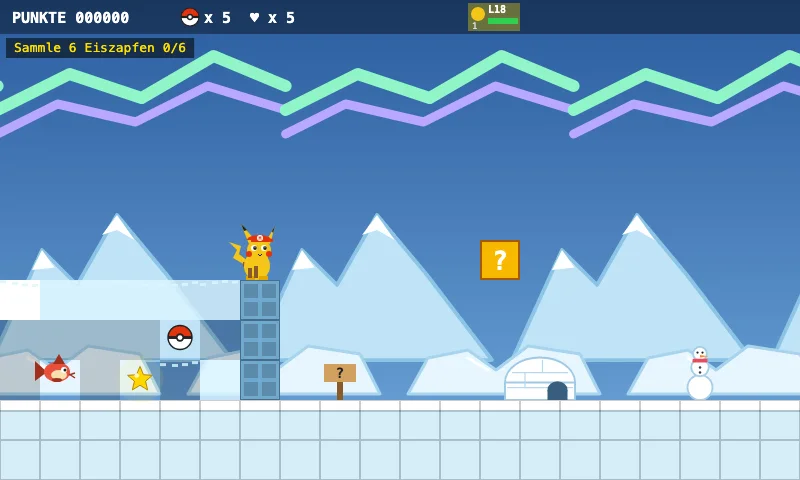
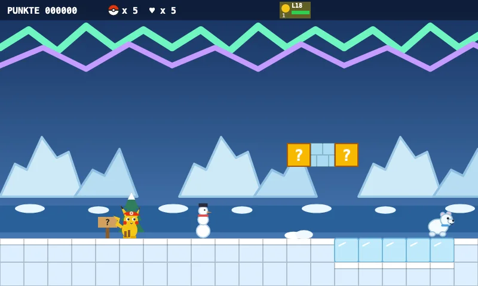

1-9 Icy Polar World
Welcome to the Polar World! Collect 6 icicles, then the flag opens.
Explore levelApproved level · 6 approved levels
Explore approved levels from the Poké-Mario library. Every level passed the game bot and comes with five real gameplay screenshots showing its routes, objectives, and encounters.

Welcome to the Polar World! Collect 6 icicles, then the flag opens.
Explore level
Welcome to the Polar Sea! Ice blocks are slippery, ice floes break away for a moment. Collect five icicles – they open the secret igloo!
Explore level
Welcome to the Pokémon School! Collect 10 books to open the teachers' room.
Explore level
Welcome to the big city! Jump from roof to roof – the fire brigade's bounce cushions help you up.
Explore level
The monkeys are having a banana party! Ride the vine roller coaster.
Explore level
Welcome to the Poké School! Collect test tubes and pencils in the classrooms.
Explore level